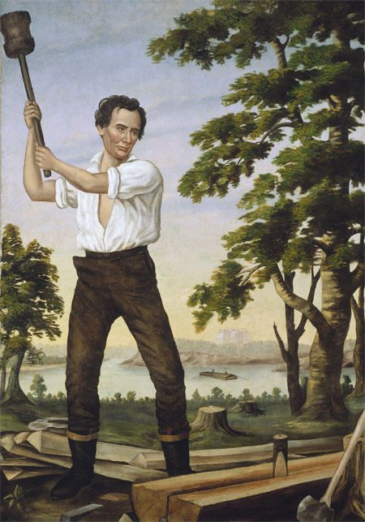

|
In the 1850's, the Whig party collapsed and was replaced
by the Republicans, a wholly sectional party. As such, in
1860, the Democrats were the only remaining national party,
though they were seriously divided between supporters of slavery
and those who favored popular sovereignty. The situation was
made far worse when, just before the Democratic convention,
rabid abolitionist John Brown seized Harper's Ferry. He was
captured and executed shortly thereafter, but not before
becoming a martyr in the North. The South, on the other
hand, was up in arms. Thousands joined military companies
and state legislatures appropriated funds for the purchase
of arms. Every barn or cotton gin that burned down sparked
rumors of a slave insurrection. Yankees became persona non
grata, and not a few were tarred and feathered. A few were
lynched. In Kentucky a mob drove thirty-nine people
associated with an anti-slavery church out of the state. In
this climate of fear and hostility, the Democrats prepared
for their national convention in April 1860, to be held in
Charleston.
The Democratic Convention
Most southern Democrats, as well as a few northern
Democrats went to Charleston hoping to destroy Popular
Sovereignty spokesman Stephen A. Douglas. Some lower-South
Democrats even hoped a Republican president would be elected
so as to make the choice facing the South starkly clear:
submission or secession. Douglas delegates felt like aliens
in a hostile land, but they were as determined to block a
plank in favor of a slave code as Southern Democrats were to
adopt one. The crisis came with the report of the platform
committee, each state had one vote and California and Oregon
had voted with the slave states to give the pro-slave code

Stephen A. Douglas
|
faction a 17 to 16 majority. Noted orator William Lowndes
Yancey gave a rousing speech in favor of the majority
position. "We are in a position to ask you to yield," he
said to Northern delegates, "What right of yours, gentlemen
of the North, have we of the South ever invaded? Ours are
the institutions which are at stake; ours is the property
that is to be destroyed; ours is the honor at stake."
The platform committee had voted against the popular
sovereignty men, but the convention had yet to vote as a
whole. With a great deal of political wrangling, and a fair
amount of parliamentary manipulation, the Douglas men
managed to get their platform adopted two days later, by a
vote of 165 to 138. Fifty delegates from the South
immediately walked out, and the convention collapsed. The
remaining delegates adjourned, agreeing to meet six weeks
later in Baltimore. The Democrats did no better, the lower
Southern Democrats again walked out and this time they were
joined by Democrats from the upper South as well as a
few Northerners. The dissenters quickly organized their own
convention and nominated John C. Breckinridge from Kentucky
(the vice president) for president on a slave code platform.
The dispirited loyalists nominated Douglas and returned
home. Effectively, the election of a Republican president
was assured.
The Republican Convention
Republicans helped along that cause by adroit action at
their national convention at Chicago, which occurred between
the Charleston and Baltimore conventions. The basic problem
was that the Republicans, who would not win any states in
the South, therefore needed to win nearly all of the free

William H. Seward
|
states to take the election. This meant that they would have
to attract the votes of not only those who were
anti-slavery, but also anti-foreign nativists and former
Whig conservatives. The frontrunner for the nomination was
William Seward of New York. However, there was concern that
he would not attract nativist votes due to his strongly
anti-nativist stance. He had also made several speeches that
had caused him to be branded a radical, most notably one in
which he insisted on an 'irrepressible conflict' between the
North and the South. In addition, years of partisan warfare
in New York had made Seward a lot of enemies, most notably
the important newspaper publisher Horace Greeley.
Seward's best hope was to wrap up the nomination quickly,
based on his strength in the states of the upper North. In
view of this, anti-Seward pragmatists organized quickly to
stop his nomination. They had several promising
alternatives, notably Salmon P. Chase of Ohio, Simon Cameron
of Pennsylvania, Edward Bates of Missouri and Abraham
Lincoln of Illinois. But Chase, like Seward, had a
reputation as a radical and did not have unanimous support
even in his own state. Cameron's reputation as a spoilsman
and his frequent shifting of political allegiance from
Democrat to Whig to Know-Nothing to Republican concerned
delegates who wanted the party to appear ideologically pure.
Bates had the support of many powerful Republicans, notably
the Blair family in Missouri and Horace Greeley, but had
been a slaveholder and a nativist and thus had alienated too
many key constituencies, most notably German Protestants.
Lincoln the Rail-Splitter
This left Lincoln. By the time the convention opened on
May 16, Lincoln had gone from being a dark horse to being
Seward's main rival. Party leaders realized that Lincoln had
most of the strengths and few of the weaknesses of the ideal
candidate. He was a former antislavery Whig in a party made
|

An image from 1860 portraying a young Abraham Lincoln splitting
rails.
|
up mostly of former antislavery Whigs. He had a reputation
as a moderate. He had ingratiated himself with many
Democrats by dropping out of the 1854 Senatorial election in
order to allow antislavery Democrat Lyman Trumbull to be
elected. Lincoln had opposed the Know-Nothings enough to win
the German vote, but not so much as to alienate former
members of the party. Lincoln was from Illinois, a state
that was crucial to Republican hopes, particularly given the
impending nomination of Stephen Douglas, also from Illinois.
Lincoln had a reputation for honesty and integrity. Finally,
and perhaps most significantly, since Lincoln was of humble
origins, he personified the ideology of equal opportunity
and upward mobility. He had been born in a log cabin, and,
in a stroke of genius, one of Lincoln's managers at the
convention acquired two rails that Lincoln had supposedly
split thirty years before. From then on, "Lincoln the
rail splitter" became the symbol of frontier, farm,
opportunity, hard work, rags to riches, and other components
of the American dream embodied in the Republican message.
The choice of Chicago as the site of the convention
helped Lincoln's chances considerably. He was, of course,
well known in the area, and his allies were able to pack the
galleys with his supporters. The Illinoisans were able to
convince Indiana to vote for Lincoln on the first ballot,
which gave the impression that Lincoln enjoyed support
outside his own state. This got the ball rolling for
Lincoln's managers, who were able to generate considerable
momentum in Lincoln's favor. Despite Lincoln's orders to
"make no contracts that will bind me", his lieutenants
almost certainly promised cabinet posts to Indianans, to
Cameron of Pennsylvania and possibly to the Blairs of
Missouri. On the first ballot, Seward received 173 votes,
sixty short of the 233 needed while Lincoln received 102
votes. On the second ballot, Lincoln pulled almost even with
Seward. This made it seem as if Lincoln had momentum, and on
the third ballot he won the nomination. To balance the
ticket, Hannibal Hamlin of Maine was nominated for vice
president. The Republicans adopted an extremely effective
platform that did not retreat from their anti-slavery
message but did soften the language of the 1856 platform. It
also denounced John Brown's raid, pledged support for a
homestead act and a transcontinental railroad, and called
for a protective tariff. The Republicans overwhelmingly
endorsed this platform and adjourned.
The Campaign
The excitement and optimism of Chicago carried over to
the campaign. The young party exuded the ebullience of
youth, and thousands of first-time voters flocked to the
Republican standard. Political songbooks rolled off the
presses, and party faithful sang their theme song, "Ain't
you glad you joined the Republicans?" Unlike the Democrats,
the Republican party was unified. Disappointed Seward
supported followed their leader's example and campaigned
hard for Lincoln. The only key constituency that the
Republicans had trouble attracting was the strongly
conservative Nativist Whigs. They bolted the party and
coalesced as the Constitutional Union party, nominating John
Bell of Tennessee for president. These conservatives decided

A flag from the 1860 presidential campaign.
|
the best course of action was no action at all. Instead of a
platform, they adopted a resolution pledging "to recognize
no political principle other than the Constitution ... the
Union ... and the Enforcement of the Laws."
The Constitutional Unionists were the only serious threat to
Lincoln's election. However, many of the Southerners in the
party committed themselves to a strongly pro-states rights
stance, alienating many Northerners, who felt they had no
choice but to vote for Lincoln.
The election of 1860 was unique in the history of
American politics. The campaign became two separate
contests; Lincoln vs. Douglas in the North and Bell vs.
Breckinridge in the South. Republicans did not even have a
ticket in the ten states of the lower South. In order to
capture the Northern states, the Lincoln camp mounted a
spirited campaign. Though Lincoln observed the silence
customary of presidential candidates at the time, writing
only a few private letters, his supporters delivered some
50,000 speeches on his behalf. They portrayed the Democrats
as the party of slavery, disunion and corruption. To counter
this effort, Douglas took the unprecedented step of taking
to the campaign trail. He undertook an exhausting tour that
undoubtedly contributed to his death a year later. His
message was that he was the only national candidate, but
this was scarcely true. The Democrats had more success with
charging the 'Black Republicans' of being racial
egalitarians. If you want to vote "cheek by jowl with a
'buck nigger'", chanted Democratic orators, if you want to
support "a party that says 'a nigger is better than an
Irishman,'" then vote Republican.
In the end, though, the only hope the Democrats really
had was if they could deny Lincoln an electoral majority and
get the election thrown into the House of Representatives.
This did not happen; despite not being on the ballot in the
South, Lincoln won 180 electoral votes, considerably more
than the 152 needed for election. Charles Francis Adams,
whose grandfather John Adams and father John Quincy Adams
had been defeated for reelection by slaveowners wrote in his
diary the day of Lincoln's election, "The great revolution
has actually taken place ... The country has once and for
all thrown off the domination of the slaveholders." Six
weeks later, on December 20, South Carolina seceded.
Source: Christopher Bates for the History 139A website
|